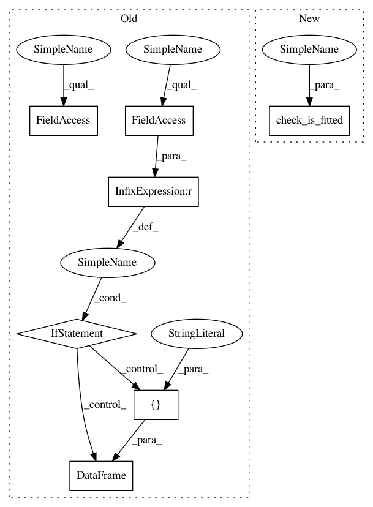

c899e6e816306956208664dcabd11e5e84e4bcb7,factor_analyzer/factor_analyzer.py,FactorAnalyzer,get_factor_variance,#FactorAnalyzer#,897
Before Change
Proportion Var 0.351019 0.128371 0.073739
Cumulative Var 0.351019 0.479390 0.553129
if self.loadings is not None:
loadings = self.loadings
n_rows = loadings.shape[0]
// calculate variance
loadings = loadings ** 2
variance = loadings.sum(axis=0)
// calculate proportional variance
proportional_variance = variance / n_rows
// calculate cumulative variance
cumulative_variance = proportional_variance.cumsum(axis=0)
// package variance info
variance_info = pd.DataFrame([variance,
proportional_variance,
cumulative_variance],
index=["SS Loadings",
"Proportion Var",
"Cumulative Var"])
return variance_info
def get_scores(self,
data,
scale_mean=None,
scale_std=None):
After Change
array([0.35101885, 0.47938987, 0.55312938]))
// meets all of our expected criteria
check_is_fitted(self, "loadings_")
loadings = self.loadings_.copy()
return self._get_factor_variance(loadings)
In pattern: SUPERPATTERN
Frequency: 3
Non-data size: 7
Instances
Project Name: EducationalTestingService/factor_analyzer
Commit Name: c899e6e816306956208664dcabd11e5e84e4bcb7
Time: 2019-04-02
Author: jbiggs@ets.org
File Name: factor_analyzer/factor_analyzer.py
Class Name: FactorAnalyzer
Method Name: get_factor_variance
Project Name: EducationalTestingService/factor_analyzer
Commit Name: c899e6e816306956208664dcabd11e5e84e4bcb7
Time: 2019-04-02
Author: jbiggs@ets.org
File Name: factor_analyzer/factor_analyzer.py
Class Name: FactorAnalyzer
Method Name: get_factor_variance
Project Name: EducationalTestingService/factor_analyzer
Commit Name: c899e6e816306956208664dcabd11e5e84e4bcb7
Time: 2019-04-02
Author: jbiggs@ets.org
File Name: factor_analyzer/factor_analyzer.py
Class Name: FactorAnalyzer
Method Name: get_communalities
Project Name: EducationalTestingService/factor_analyzer
Commit Name: c899e6e816306956208664dcabd11e5e84e4bcb7
Time: 2019-04-02
Author: jbiggs@ets.org
File Name: factor_analyzer/factor_analyzer.py
Class Name: FactorAnalyzer
Method Name: get_eigenvalues